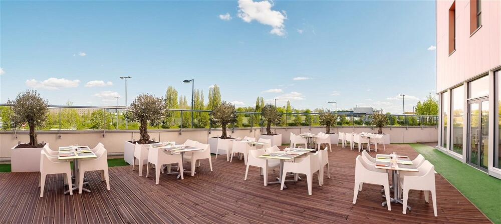
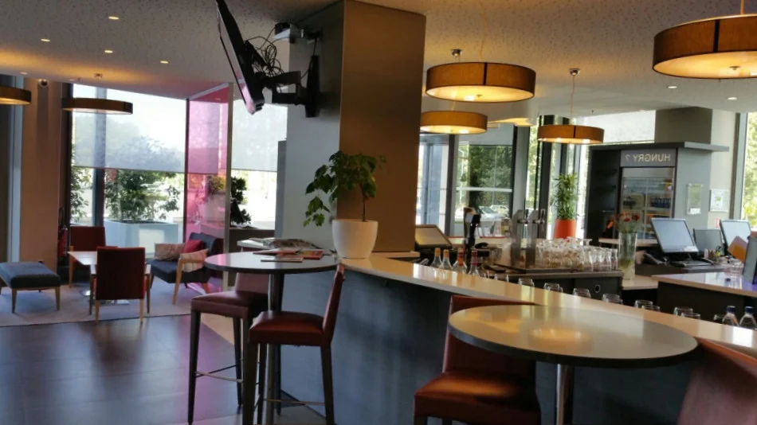
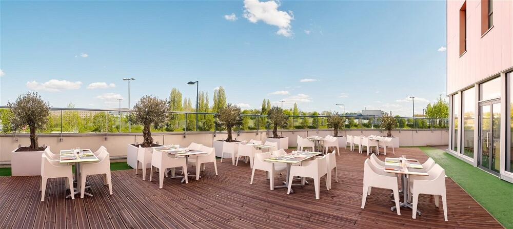
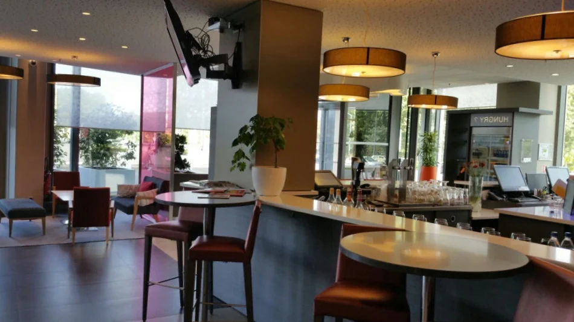

Le Park Inn
 



Situé à quelques pas de la Decathlon Arena - Stade Pierre Mauroy, le Park Inn by Radisson Lille Grand Stade possède une réception ouverte 24h/24, une salle de sport, des salles de réunion et une connexion Wi-Fi gratuite dans l'ensemble de ses locaux. Conçues par les architectes Fabrice et Didier Knoll, les chambres de l'hôtel comprennent toutes une télévision par satellite à écran LCD et une bouilloire électrique. La salle de bains est pourvue d'articles de toilette gratuits et d'un sèche-cheveux. Lors de votre séjour, vous pourrez déguster un petit-déjeuner buffet chaque matin ou prendre un verre au bar. Le Park Inn by Radisson Lille Grand Stade dispose également d'un restaurant servant des plats traditionnels et des spécialités régionales. L'établissement se trouve à proximité du stade Pierre Mauroy, à 700 mètres du centre commercial V2, à 850 mètres d'une station de métro et à 3 km d'un parcours de golf. L'aéroport de Lille - Lesquin est situé à 7 km et la gare de Lille à 8 km.
Nombre de chambres : 1
Équipements : Wi-Fi, Jardin, Piscine, Spa, Bain à remous, Salle de sport, Restaurant sur place, Bar lounge, Climatisation, Jacuzzi, Télévision
Réserver ce bien
Prix par nuit : 79€/nuit
Réserver